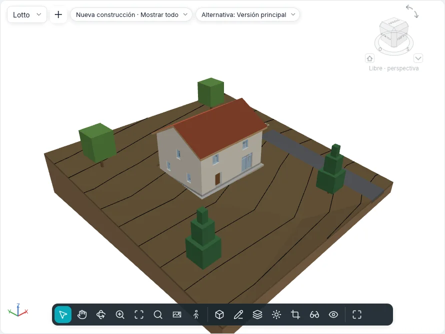

Plano de emplazamiento y terreno
El suelo sobre el que se apoya el edificio y los dibujos de la parcela que lo rodea se hacen con Masas y emplazamiento ▸ Emplazamiento y Modificar sitio. Funcionan en las plantas y en el Plano de emplazamiento; un terreno y una plataforma también se dibujan en las vistas 3D, sobre el plano de su nivel.

Terreno
Un terreno es un sólido: un contorno dibujado (con huecos) sobre un nivel, modelado por puntos, con las capas y el espesor de su tipo.
Terreno ▾ tiene dos modos:
| Modo | Cómo funciona |
|---|---|
| Crear a partir de boceto | Modo boceto Crear contorno de terreno, con el grupo común Dibujar (líneas, rectángulo, polígonos, círculo, arcos, Seleccionar líneas). Dibuja un bucle cerrado; un bucle dentro de él es un hueco. Finalizar modo de edición crea un terreno plano, con su parte superior en el Desfase de altura desde nivel |
| Crear a partir de importación | El cuadro Añadir puntos de las capas seleccionadas: las capas de un DWG o DXF importado con alturas (líneas y puntos 3D) cuyos puntos modelan el terreno, o Crear desde archivo de puntos… (CSV o TXT, con su unidad elegida en Formato) |
Un archivo de puntos da en cada fila primero x, y y z; los nombres y las demás columnas se omiten, y de dos puntos con la misma x, y queda la z más alta. Por encima del límite de los Parámetros de emplazamiento (20.000 puntos por defecto, de 10.000 a 50.000) los puntos se muestrean hasta ese límite y un mensaje dice cuántos se han conservado.
Edición de forma
Un terreno seleccionado muestra el grupo Edición de forma:
| Herramienta | Cómo funciona |
|---|---|
| Añadir punto | Haz clic dentro del contorno. En la barra de opciones: Absoluto (la Elevación escrita, desde la Base de elevación: nivel actual, punto base del proyecto, punto de reconocimiento, origen interno) o Relativo a la superficie (un desfase por encima o por debajo de la superficie donde haces clic); los Forzados XYZ toman la elevación de una esquina de suelo o del extremo de un muro, más el Desfase de los forzados |
| Modificar subelementos | Haz clic en un punto: arrástralo en planta, o escribe su altura sobre la parte superior original del terreno |
| Añadir línea de división | Dos clics: un pliegue de la superficie, recto entre sus elevaciones |
| Restablecer forma | Quita todos los puntos y todas las líneas de división |
| Simplificar terreno | Conserva una parte de los puntos (1 000 puntos al 70 % se convierten en 700) |
La superficie se triangula a través del contorno y de los puntos; las curvas de nivel siguen al instante.
Tipo, capas y curvas de nivel
El tipo del terreno tiene su Estructura en el mismo cuadro Capas del tipo que muros y suelos: la capa marcada Variable absorbe la forma, así la base queda plana. Visualización de curvas (Visualización de curvas en la paleta del terreno) lista grupos de curvas de nivel: Inicio, Fin, Incremento, Valor único o Varios valores, el estilo de línea (principales, secundarias, líneas ocultas, aristas de la triangulación) y una casilla para apagar un grupo. Un proyecto nuevo dibuja curvas principales cada 5 m y secundarias cada metro; los tipos Calle asfaltada, Camino de grava y Acera no dibujan ninguna.
Las curvas de nivel también se dibujan sobre el terreno en las vistas 3D, con sus estilos de línea, ocultas donde el edificio queda delante.
En sección el terreno se corta con sus capas y los patrones de sus materiales. Una Cota de elevación de punto colocada sobre el terreno lee allí su elevación.
Visibilidad y gráficos ▸ Terreno tiene las subcategorías Curvas de nivel principales, Curvas de nivel secundarias, Líneas ocultas, Líneas de pliegue, Puntos de contorno y Puntos interiores; las tres últimas están apagadas hasta que se encienden.
Opciones de emplazamiento ▾ ▸ Sombreado suave del terreno suaviza todos los terrenos en los estilos sombreados.
Opciones de emplazamiento ▾ ▸ Estabilidad del vacío de excavación: una excavación que no sale entera se repite con su contorno desplazado unos milímetros en x o en y; Excavar dice cuántas excavaciones se desplazaron.
Edición del terreno
| Herramienta | Cómo funciona |
|---|---|
| Subárea | Dibuja un bucle sobre el terreno seleccionado (o haz clic antes en un terreno). Su Tipo da su material; el Desfase de subregión la eleva (un bordillo) o la hunde en su anfitrión (con su Volumen de excavación) |
| Dividir terreno | Haz clic en el terreno, luego dibuja un bucle cerrado dentro de él o líneas abiertas de borde a borde. Una subárea que la división no puede conservar pide Eliminar ejemplares |
| Fusionar terrenos | Haz clic en el terreno principal, luego en el segundo: deben compartir un borde o solaparse. Quitar puntos de los bordes comunes está activado por defecto |
| Excavar / Quitar excavación | Con el terreno seleccionado, haz clic en un suelo, una cubierta, una plataforma u otro terreno que lo atraviese. Volumen de excavación individual lista cada corte |
| Nivelación | Editar región nivelada pide una copia exacta o solo los puntos del contorno; haz clic en un terreno de una fase anterior. Se derriba en la fase actual y su copia, nueva, se abre en edición de forma. La copia indica Desmonte, Terraplén y Desmonte/terraplén neto |
Una tabla de planificación de Terrenos lista desmonte y terraplén, con un total general.
Plataforma
Plataforma dibuja un bucle cerrado sobre un terreno (Crear contorno de plataforma, con Designar muros y Flecha de pendiente). Su parte superior está en el Desfase de altura desde nivel; el terreno de debajo se excava o se rellena hasta su cara inferior. Su tipo tiene una Estructura de capas y el patrón de relleno del nivel de detalle bajo.
Elementos de emplazamiento y aparcamiento
Elemento de emplazamiento coloca árboles, arbustos, bancos, farolas e hidrantes, uno por clic (barra espaciadora para girar); Aparcamiento coloca plazas de aparcamiento (90°, 60°, 45°, en línea, accesibles). Ambos se apoyan en el terreno o la subárea bajo el clic y la siguen cuando cambia. Elegir nuevo anfitrión los lleva a otro terreno u otra subárea; Repetir en serie hace filas de ellos.
Límites de propiedad
Límite de propiedad pregunta cómo crearlo:
- Crear dibujando: las líneas del modo boceto; un bucle abierto avisa de que su área no se puede calcular (finaliza de nuevo para dejarlo abierto);
- Crear introduciendo distancias y rumbos: la tabla Límites de propiedad, una fila por tramo con Distancia, Rumbo (como N 45°00'00" E), Tipo (línea o arco), Radio e I/D; Insertar, Eliminar, Arriba, Abajo y Cerrar, que añade el tramo de vuelta al inicio. Los tramos siguen el norte real.
Un límite de propiedad seleccionado muestra Editar tabla. Opciones de emplazamiento ▾ ▸ Datos de propiedad fija la Visualización de ángulo (rumbo o grados) y las unidades. Los límites de propiedad se ven por defecto en los planos de emplazamiento y en las vistas 3D; una tabla de planificación de Límites de propiedad lista su nombre y su área.
Etiquetas de curvas de nivel
Etiqueta de curvas de nivel: haz clic en el inicio y el fin de una línea que cruce las curvas de nivel; cada curva que cruza muestra su elevación, girada para leerse desde el norte de proyecto. El tipo de la etiqueta fija el texto y si solo se etiquetan las curvas principales.
El plano de emplazamiento
Cada proyecto nuevo tiene un Plano de emplazamiento; Vistas ▸ Planta ▾ ▸ Plano de emplazamiento crea otro, para el nivel activo: 1:200, cortado por encima del edificio hasta 10 m por debajo del nivel, orientado al Norte real. Orientación en sus propiedades lo devuelve al Norte de proyecto.
Parámetros de emplazamiento
Opciones de emplazamiento ▾ ▸ Parámetros de emplazamiento contiene las curvas de nivel del proyecto (para los tipos de terreno que no fijan las suyas), el Material de corte de sección y la Profundidad del poché de los tipos de terreno sin capas, los datos de propiedad y el número máximo de puntos que conserva una importación.
Todavía no
Terreno desde cara, Vincular topografía y Contexto circundante llegan en una fase posterior.